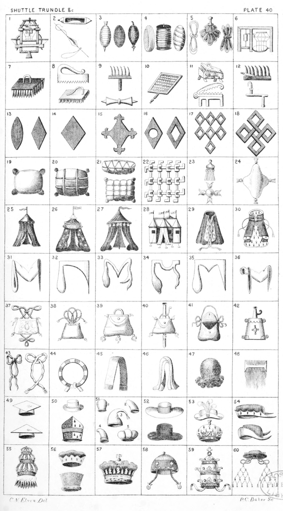

Plate 40.

Plate 40.
- Knitting-frame
- Shuttle, or Wheel Shuttle ; and
Spindle threaded
- Fusil, or Spindle threaded ; a
Bottom ; and Wharrow Spindle
- Trundle ; a Quill or Trundle ; and
a Quill of Yarn
- Cotton hank ; a Silk hank ; sometimes depicted as the third figure
- Silk-Thrower's Mill
- Stock-Card
- Floats
- Preene ; and Empty Quill
- Wool-Card
- Hemp Break, or Hackle the Badge
of Bray. Second figure is also a
Hemp-Break borne by Bree
- Jersey-comb ; and Rope-hook
- Ancient Fusil ; and a Fusil
- Lozenge
- Lozenge-Flory
- Rustre ; and a Mascle
- Seven Mascles conjoined, three,
three, and one
- Four Mascles-fretted
- Wool Pack
- Wool-Pack corded
- Bale of Piedmont Silk; and a bag
of Madder
- A Window-grating. Badge of Sutton
Baron Dudley
- Tassel ; and a Ball tasselled
- Cushion lozengy and tasselled
- Tent
- A Tent az. fringed and semee of
stars or, ensigned with a pennon
gu. Crest of Lindsey
- Tent
- Pavilion, or Tabernacle, also termed
a Sperver
- Mantle, or Royal Cloak
- Parliament-Robe
- Manche, or Maunch
- Maunch, as borne in the arms of
Lord Hastings
- Maunch antique
- Maunch antique
- Maunch antique
- A hand clenched issuing from a
Maunch
- Purse of State
- Purse stringed and tasselled
- Palmer's scrip, or Wallet
- Painter's Staff and Scrip
- Wallet open
- Powder-horn, or Flask
- Hatband Nowed ; and a Hatband
- Circular Hatband
- Stole
- Piece of Cloth
- Head of Hair, or Peruke
- Comb in a head of hair
- A Four-cornered and a three-cornered cap
- A Hat; and a Cap as borne by the
name of Wingfield
- Cap as borne by De la Rous. 2
born by Maundefield. 3 Infula,
or Long Cap. 4 Cap borne by
Drakenford. 5 as borne by Capper
- Hat worn over the arms of the
States General ; and a Hat as in
the arms of the Feltmakers' Com-
pany
- Hat turned up and adorned with
three Ostrich feathers borne by
the name of Balm. A Crown as
borne in the arms of the Skinners
Company
- Chapeau, or Cap of Maintenance ;
and a Cap, Copped, or Hat
- Tiara, or Triple-Crown with clouds
in base issuing rays, as borne in
the arms of the Drapers Company
- Bonnet Electoral ; and State Cap
of the Lord Mayor of London
- Crown of the King of Arms
- Cap as in the arms of Robinson
- The Popes Crown, or Tiara
- Cardinal's Cap, or Hat